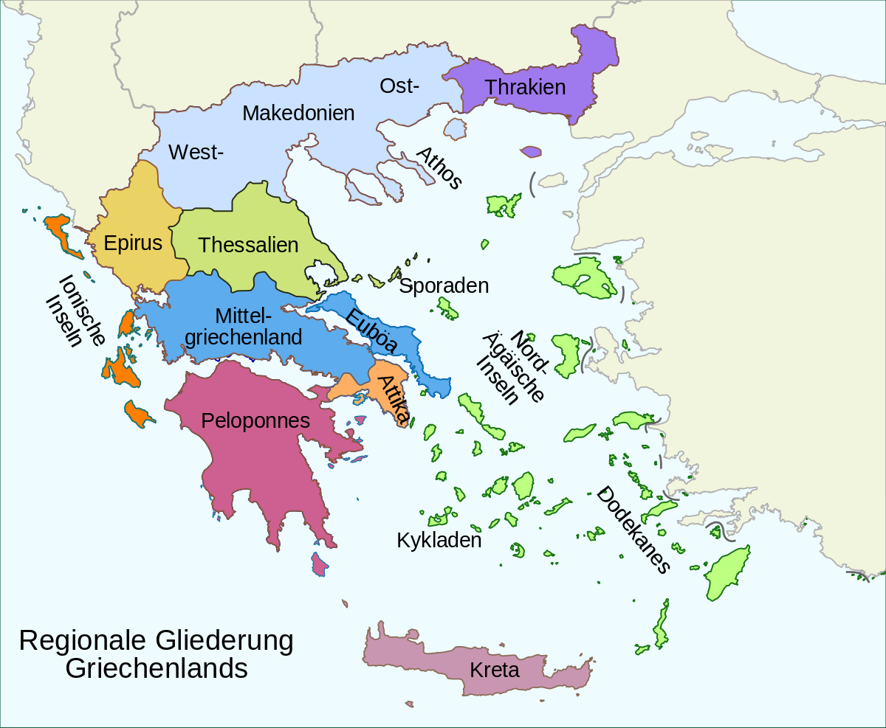

Die Fläche Griechenlands (inklusive aller 3.000 Inseln) liegt bei circa 132.000km2.
Des weiterem sind circa drei Viertel Griechenlands gebirgig, wobei der höchste Berg der Olymp mit 2.917 Metern ist.

Grichenland ist außerdem der südlichste Staat im euopäischen Mittelmeerraum.
Jedoch besitzt Griechenland daher auch relativ wenig Seen und Flüsse.
Allerdings beträgt die Küstenlänge fast 15.000 km.
Die bekanntesten Inseln sind:
Korfu
Kreta
Kos
Santorin
Mykonos
Samos
Die Nachbarländer Griechenlands sind im Norden:
Mazedonien
Buldgarien
Albanien
und im Süden:
Türkei